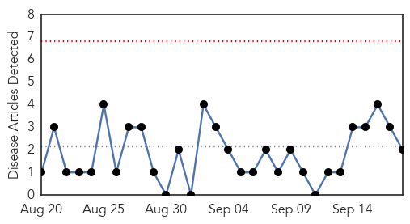
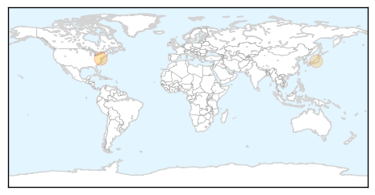
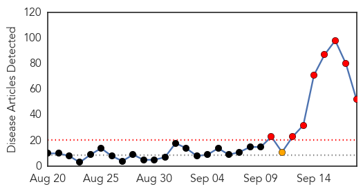
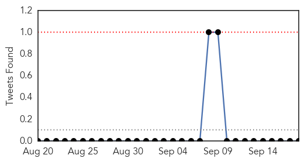
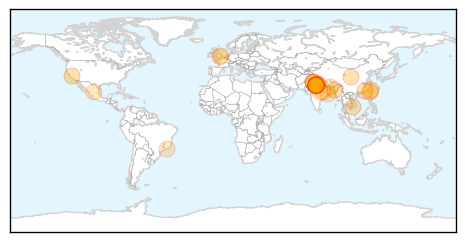

Pertussis
30-Day Web Trend
0 alerts, 0 warnings

30-Day Twitter Trend
0 alerts, 0 warnings

Article Locations
Article Confidences

Top Articles:
Top Tweets:
-
No tweets found for Sep 18, 2015
Dengue Fever
30-Day Web Trend
8 alerts, 1 warnings

30-Day Twitter Trend
0 alerts, 0 warnings

Article Locations
Article Confidences

Top Articles:
- 0.997
- Delhi hospitals struggle to cope with dengue outbreak ucanews.com
- 0.996
- Read Health News & Articles at TheHealthSite.com
- 0.989
- Dengue cases in Tainan jump by more than 500
- 0.984
- Tehelka - Investigations, Latest News, Politics, Analysis, Blogs, Culture, Photos, Videos, Podcasts
- 0.981
- 93 dengue cases confirmed in Amritsar; one death suspected
- 0.981
- Dengue outbreak: Delhi corporations caught on wrong foot over data
- 0.972
- Dengue hits Delhi's doctors as 15 fall prey to deadly disease while treating patients
- 0.965
- Dengue death of Odia boy: Magistrate-level probe ordered
- 0.964
- Toll reaches 16 as two more girls die; over 2,000 tested positive
- 0.961
- Over 10,000 people in Tainan hit by dengue fever outbreak (update)
- 0.953
- Kamrup (M), border dists in dengue grip
- 0.950
- A new understanding of dengue virus
- 0.950
- Killer! Dengue Fever, Symptoms, Home Remedies, Tips To Prevent From Dengue?
- 0.942
- SGGP English Edition- South Vietnam has most dengue fever infections
- 0.941
- DC reviews arrangements at hospital
- 0.935
- EDITORIAL: Playing politics with people’s lives
- 0.925
- Dengue alert sounded in Himachal
- 0.922
- Dengue death toll rises to 16; over 2,000 affected
- 0.921
- Dengue scare: MCD not doing enough fumigation, say citizens
- 0.918
- UT to start 24×7 dengue helpline
- 0.916
- Guangdong reports 664 dengue cases - Xinhua
- 0.911
- Dengue Scare in Delhi Leads to Papaya Leaves, Goat Milk Being Sold at High Prices
- 0.909
- Dengue toll 11, Delhi to take action on hospitals
- 0.874
- Parents jump to death after 7-yr-old boy dies of dengue
- 0.869
- 17-year-old boy becomes 17th dengue death case
- 0.858
- Tribune Reporter
- 0.850
- 2 more die, dengue toll at 16
- 0.847
- The Killer Dengue and the sordid saga of poor governance!
- 0.837
- Dengue menace: 4 more dead, toll 20
- 0.830
- ‘Overworked’ doctors complain of staff shortage
- 0.829
- Why second dengue infection can be life-threatening
- 0.820
- Dengue death toll reaches 16 as two more girls die Bhatkallys.com
- 0.804
- Delhi govt increases 795 beds in private hospitals to fight dengue
- 0.746
- HC seeks explanation concerning Dengue
- 0.738
- A look at strategies adopted by other countries to combat dengue
- 0.736
- Treat dengue patients with caution, says Principal Secretary-Health
- 0.731
- Delhi dengue death toll rises to 20 as 4 more die : Delhi, News
- 0.721
- World fights deadly bite- The Times of India
- 0.677
- Deputy Commissioner takes stock of Dengue situation-visits ward of Guru Nanak Hospital
- 0.673
- How Dengue Was Allowed to Overpower Delhi
- 0.646
- Odisha launches helpline for dengue patients in Delhi
- 0.612
- Dengue crisis: This is what Yoga guru Ramdev suggests : India, News
- 0.607
- Junior docs launch agitation in MP for better pay, equipment
- 0.607
- Dengue menace: Congress holds massive protest outside Kejriwal’s residence
- 0.591
- As dengue assumes epidemic proportion, Delhi govt and private players bicker over test price cap
- 0.581
- Malaria MDG target achieved amid sharp drop in cases and — UNICEF report
- 0.567
- mydigitalfc.com
- 0.550
- Mob thrashes doctor as woman dies of dengue
- 0.515
- Four more die of dengue, toll rises to 20
- 0.515
- Odisha breaking news, Latest Odisha news,Odisha Headlines, Odisha latest online news, Odia news paper, Odisha epaper
Showing top 50 articles...
Top Tweets:
- 0.709
- Flavivirus news: 9 Tested Positive For Dengue in Jammu - NDTV: NDTV9 Tested Positive For Dengue... http://t.co/lechAJrV67 pathogenposse
- 0.551
- Flavivirus news: Dengue Fever: Tainan Faces Worst Outbreak, Over 10000 Infected, 36 Dead - Head... http://t.co/StXZOLwxTF pathogenposse